‘LAME: From light to organs’
A mathematical model of how CHO cells are guided to form structured tissues
Model aims
- Determine the rate limiting cellular mechanism
- Optimise the rate limiting parameters by using a conventional (Sensitivity Analysis) and an innovative (Paramter Sampling) approach
- Determine the range of optimal light intensities and light pulses our Wet Lab should test in the lab
- Conduct a Cost Analysis to evaluate the economic viability of our optogenetic tool

Legend:
LACETF = Photocleavable (PhoCl) linker attached to the outter membrane of the cells and the Transcription Factor (TF)
LACE = Protein on cells outter membrane with a part of the cleaved PhoCl linker
TFC = Free TF in the cytoplasm of the cell
TFN = Free TF in the nucleus of the cell
PrRFP = RFP Promoter
PrRFP + TFN = TF in the nucleus bound to the RFP Promoter
mRNAN = mRNA in the cell nucleus
mRNAC = mRNA in the cell cytoplasm
PRFP = RFP translated protein
The Science behind LAME
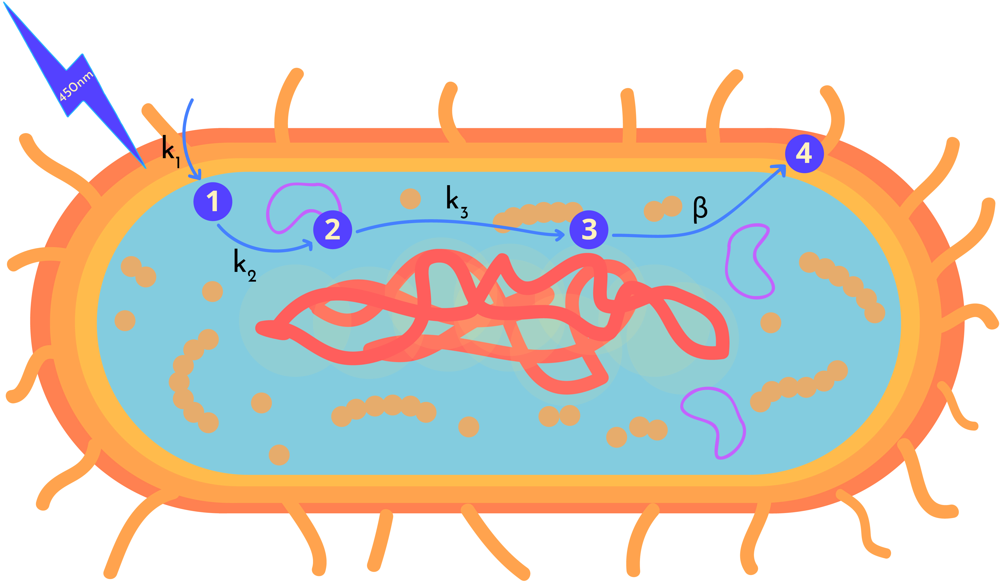
LAME models the light activated expression of GFP protein within genetically engineered CHO cells.
When light shines onto our CHO cells the photocleavable linker anchoring the RFP TF on the outer membrane of the cell becomes cleaved.
The photocleavage leads to the release of the TF in the cell. The TF is then guided to the RFP promoter in the cell with the help of a dCAS9, which has been attached to it.
This mechanism could be used to induce the production of cadherin, the surface proteins that cause mammalian cells to adhere to eachother, upon demand. Thererfore,
it could be used to create organised cell structures.
We attempted to optimise the rate at which RFP can be seen within the CHO cells, in order to increase
the speed at which cellular transcription and translation can be activated.
Our model can be divided into three main steps:
- 1. Cleavage of Photocleavable (PhoCl) Linker (We want to make these links- where when you press on them you get directed to this section)
- 2. Transcription
- 3. Translation
We decided to incorporate some innovative twists in our LEGIT model, where we modelled:
- The rate kinetics of a system induced with photocleaving
- The transport of our TF, which has a dCas9 attached to it, to the nucleus of the cell
1.) Cleavage of PhoCl linker
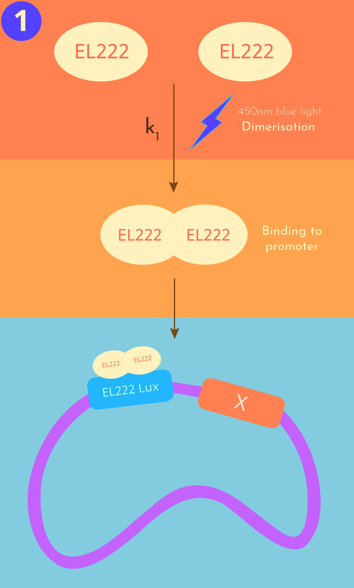
Step 1: Photocleavage and release of the RFP TF in the cytoplasm of the cell
Location: Outter cell membrane
The first step of our simulation is the photocleavage of PhoCl, which results in the release of the RFP TF in the cytoplasm of the cell. Two degradation factors were introduced within our ODEs to account for the hald-life of the RFP TF and the
continual transport of TFC from the cytoplasm to the nucleus of the cell.
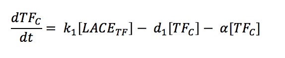
The photocleavage is dependent on light intensity (L). The Hill equation is commonly used to
fit inducible promoter genetic circuits. We therefore decided to adapt the Hill equation in our ODE to evaluate
the effect different light intensities would have on the rate of photocleavage of the LACETF complex.
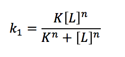
2.) Transcription
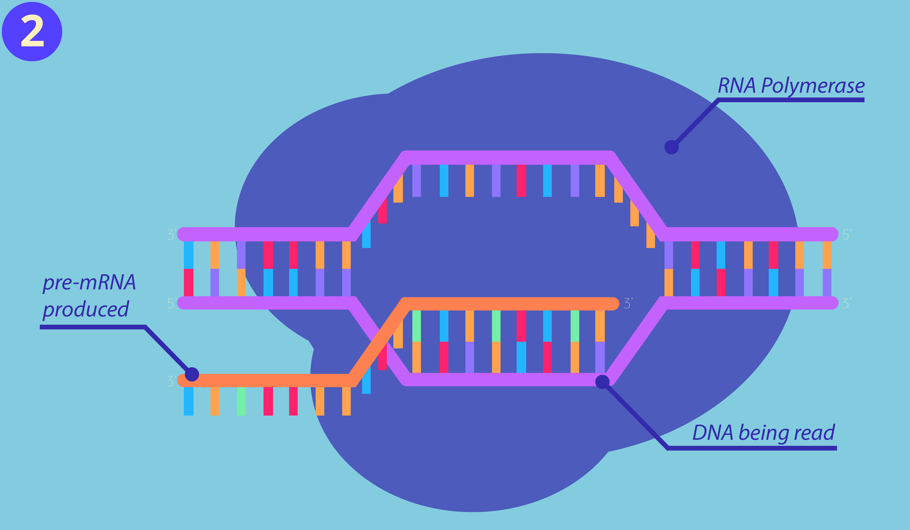
Step 2: Transcription
Location: Nucleus
The second step of our simulation is the production of mRNA from transcription.
In order for transcription to take place the TFC needs to be trasnported from the cytoplasm of the cell to the nucleus. The TFC is guided into the
nucleus of the cell to the RFP promoter with the help of dCAS9. Once the TFc enters the nucleus of the cell it becomes TFN. The rate at which the TFN binds to the RFP promoter
affects the rate at which transcription takes place. Two degradation factors were introduced t oaccount for the half-life of the mRNAN and the transport of the mRNA from the nucleus of the cell
to the cytoplasm.

3.) Translation
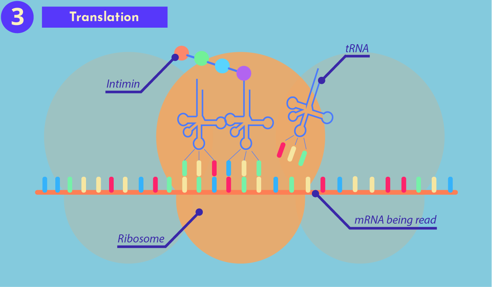
Step 3: Translation
Location: Cytoplasm
The third step of our simulation is the production of the RFP protein from translation. The change in concentration of the RFP protein is dependent on three main factors. Firstly, the rate at which mRNA is transported from the nucleus to the cytoplasm, this is
represented with the letter 'β'. Secondly, the rate of translation and finally the maximum amount of RFP protein a cell can express. A degradation term was introduced to represent the degradation of RFP over time because of dilution due to
cell growth and the half-life of the RFP protein.
Results
From our LAME simulation we compiled the graphs generated, evaluated their results
and determined the optimal range of values our Wet Lab team should evaluate for the rate-limiting parameters we identified.
Determining the rate limiting step in RFP expression
We used rate kinetics modelling to determine the rate limiting step in the cellular mechanisms involved in the light-activated transcription of RFP.
Click here to check out our approaches and assumptions!
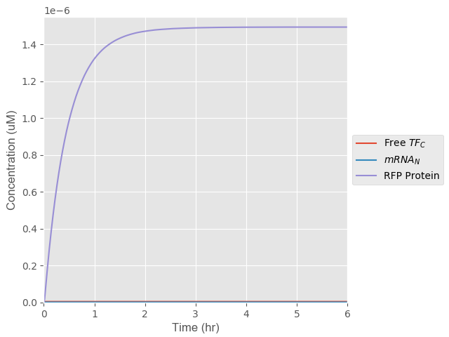
Figure 1: Rate of Cellular Mechanisms involved in the expression of RFP protein
For Figure 1 we decided to induce the photocleavable expression system with a 27 W/cm2 light intensity.The concentration of the free TF and mRNA in the nucleus appear to be much smaller than that of the other species produced.
Therefore, we decided to plot a second figure to evaluate the rates of photocleaving and transcription taking place.
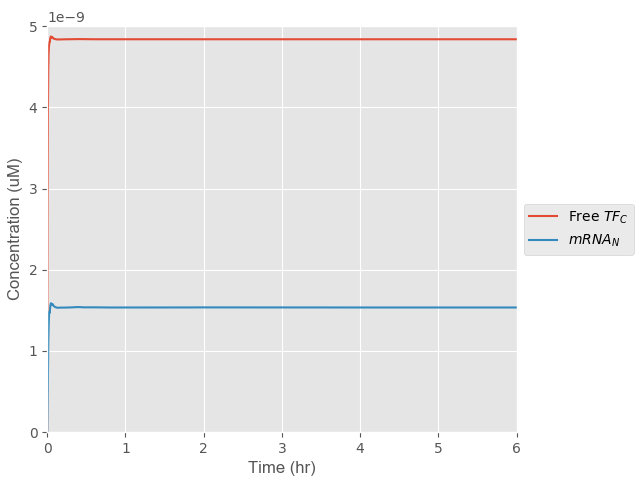
Figure 2: Re-scaled plot of Figure 1 to view the rate at which TF is released
A rate limiting step in a process is the step that takes the longest amount of time to reach its maximum value, essentially the step that takes the longest time to
plateau. We identified the rate at which translation takes place as the rate limiting step from the cellular mechanisms involved.
| Step |
Time taken to plateau (hr) |
| Cleavage of PhoCl Linker |
0.5 |
| Transcription |
0.5 |
| Translation |
5 |
A rate limiting step in a process is the step that takes the longest amount of time to reach its maximum value, essentially the step that takes the longest time to plateau.
We identified the rate of translation is the rate limiting step in this cellular mechanism.
The rapidity of our LIT technology is vital, therefore we decided to identify the rate limiting parameters within the ODE that describe the translation of mRNAN to RFP protein.
Optimising Light intensity
Our LAME model is initiated with the photocleavage of PhoCl Linker that leads to the release of the transcription factor. Therefore we thought it would be interesting to evaluate the effect
different light intensities had on the concentration and rate of expression of RFP protein in the cell. The range of values we selected to test fell within the range of 0 W/cm2 and
54 W/cm2, where 0 W/cm2 represented our system in its off state and 54 W/cm2 represented the maximum light intensity Mammalian cells can withstand
before they started to die.
Sensitivity Analysis of Light Intensities
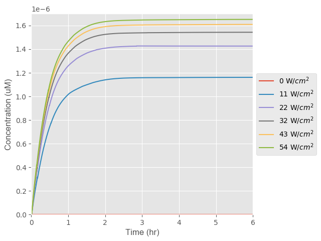
Figure 3: Effect of light intensity on the concentration and rate of expression of RFP protein in the cell
From Figure 3 it is evident that an increase in the light intensity used to photocleave PhoCl and activate the expression of RFP within the cells corresponds to a direct increase in the concentration of RFP expressed in the cells.
Optimising the parameters in the rate-limiting step
We decided to optimize the rate-limiting parameters present in the ODE which describes the translation of RFP protein in the cell. The two rate-limiting parameters identified were: β (the rate of transport of mRNA to the cell cytoplasm) and d3 (the degradation rate of PRFP).
The maximum and minimum values that could be assigned to each parameter were determined from papers. We decided to optimise the values for each parameter by using two approaches, a Sensitivity Analysis and Parameter Sampling.
Optimising the rate at which mRNA is transported to the cell nucleus (β)
The rate of translation is dependent on the rate at which mRNA is transported to the cytoplasm of the cell. Ideally, we would want a low β value to increase the rate at which the mRNA is transported to the cells cytoplasm. This would increase the rate of translation.
Sensitivity Analysis for b
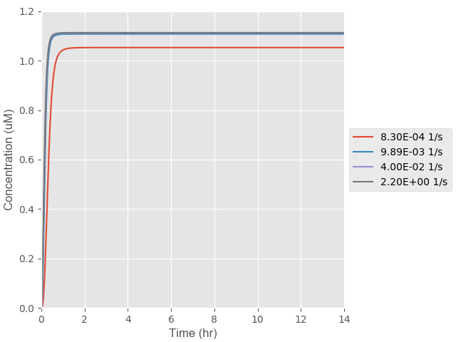
Figure 5: Effect Km has on the rate of intimin expression on the cell surface
We first decided to run a Sensitivity Analysis to get a better understanding of the range of Km
values we should be using in our optimised model. From Figure 5 it is evident that the optimum Km value is 0.000005 uM. Sensitivity Analyses focus on
selecting the most optimum conditions even if they cannot be achieved by the specific cellular mechanisms evaluated.
We therefore decided to conduct Parameter Sampling to ensure the value we select to optimise our Km to can realistically be achieved in our cells.
Parameter Sampling for Km
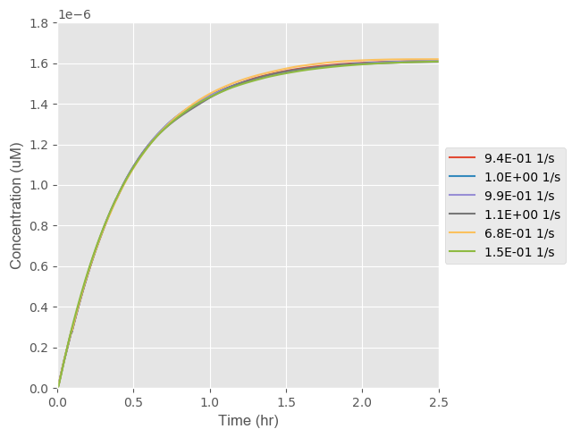
Figure 6: Effect Km has on the rate of intimin expression on the cell surface
Parameter Sampling takes the specifics of a particular cellular mechansim into consideration, therefore we believe the results obtained from
this approach should be more representative of the actual optimised Km value that could be achieved in our technology.
Optimising the degradation rate (d3) of the GFP protein
The parameter d3 represents the rate at which the concentration of GFP decreases due to protein degradation and dilution.
Therefore, we would want to minimise the value of d3 to decrease the time it takes for the maximum amount of GFP to be expressed in the cell.
Sensitivity Analysis for d3
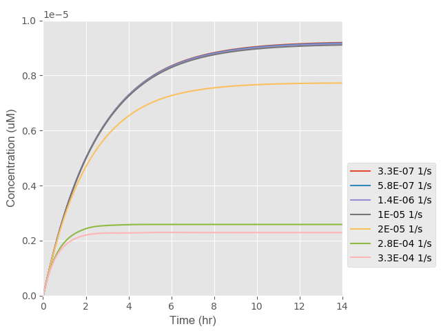
Figure 7: Effect d3 has on the rate of RFP expression in the cell
In Figure 7 it is evident that from the Sensitivity Analysis a large range of d3 values are
presented, however no factors such the origin of protein, size of the protein etc. have been taken into consideration to make the d3 value case specific.
Parameter Sampling for d3
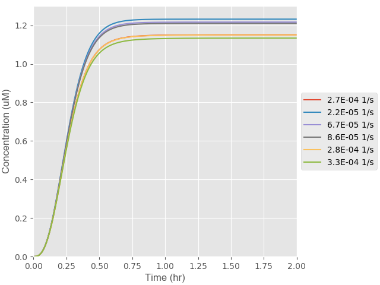
Figure 8: Effect d3 has on the rate of RFP expression in the cell
In Figure 8 it is evident that once Parameter Sampling is used a narrower range of d3
values are evaluated. This occurs because a series of factors that cater the answer to our particular cellular mechanism are taken into consideration.
Determining the effect light pulsing has on the rate of GFP expression
We determined increasing light intensity has a directly proportional increase on the concentration
and the rate of expression of GFP in the cell. We therefore decided to evaluate the effect other light properties would have on our system. More specifically, we decided to evaluate whether light pulsing had an effect on GRP expression. This would allow us to see whether continuously activating and
deactivating our light induced system could result in the expression of a larger concentration of GFP at a faster rate in the cells.
We first ran a control simulation, where we introduced one long pulse of 7 hours of light, to ensure we received a curved response that would simulate the activation and deactivation of our cellular mechanisms for a defined period of time.
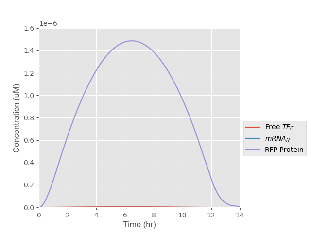
Figure 9: Effect one pulse has on the rate kinetics on the expression of intimin
From Figure 9 it is evident the behaviour of all the species produced after each step involved in the expression of intimin is represented as a dumb bell shaped curve. This is justifiable, as when the light is turned off we expect the rate of product production to become smaller than the rate of product degradation. Therefore, as time passes the concentration of each product from each step is expected to decrease, until eventually all the species from the product produced degrade.
We then wanted to evaluate the effect pulsing for periods of 2 hours would have on the expression of intimin on the surface of the cell.
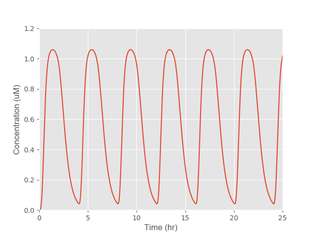
Figure 10: Effect pulsing light in 2 hour intervals has on the intimin surface expression
From Figure 10 we discovered that if we pulse light on the cells for a period of 4 hours three times within 24 hours, we experience more than a 10-fold increase in the concentration of intimin expressed on the surface of the cells.
WE NEED TO TALK ABOUT THE SCIENCE OF WHY THIS HAPPENS
Optimised conditions
The biggest increase in the rate of intimin expression on the surface of the cells occurrs when the value of ‘Km’ decreases and the values of ‘Vmax’ increases. This is something we expected, as the lower the value of Km the higher the affinity our cells membranes would have for intimin and therefore the faster the transport of intimin to the cell surface. In addition, the higher the Vmax the faster the rate at which the reaction occurs. Thus, the combination of both of these phenomena results in a faster transport of intimin to the surface of the cell.
| Optimised Paramter |
Value |
| Km (uM) |
0.0011 |
| Vmax (1/h) |
9,217,361 |
Running the model with optimised paramters
We ran our rate kinetics model with our newly optimised parameters and determined that with our optimised parameters a larger concentration of intimin was transported to the surface of the cell. However, the same amount of time was taken for the intimin expression rate to plateau. Therefore, this
means that although the concnetration of intimin expressed on the surface of the cell was optimised this step prevails to be the rate-limiting step in the netwrok of cellular mechanisms invovled.
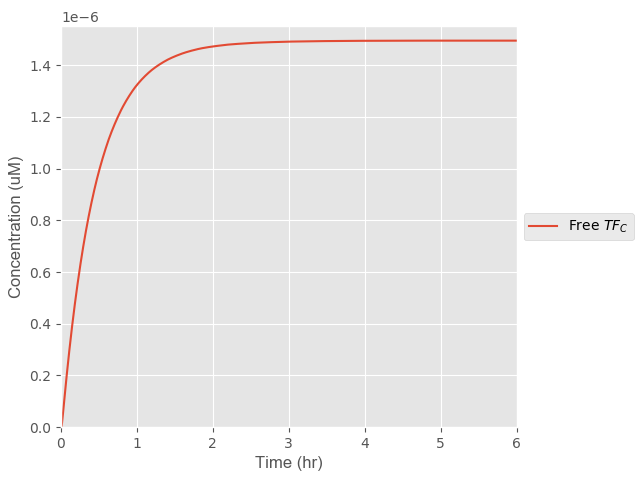
Figure 11: Original rate kinetics for the transport of intimin to the cell surface
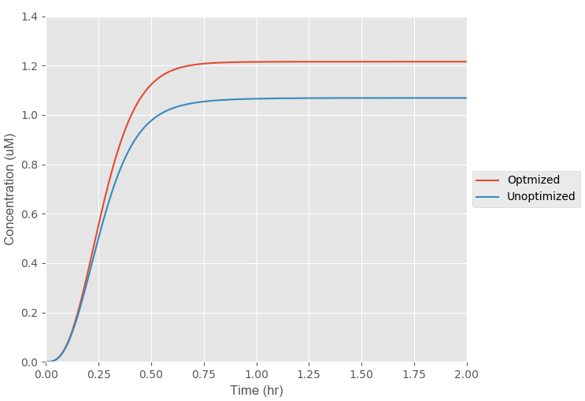
Figure 12: Optimised rate kinetics for the transport of intimin to the cell surface
Cost Analysis
We ran a Cost Analysis to ensure our LIT optogenetic tool was an affordable technology current labs could use to replace alternative technologies with.
We focused on identifying the main operational costs a user would incur, where we determined the most critical ones were: the light intensity they used to activate the E.coli cellular mechanism; and the frequency of light pulsing.
We created a function in Python that took costs incurred for both methods into consideration, where we attempted to identify the most cost-efficient operational conditions for our tool.
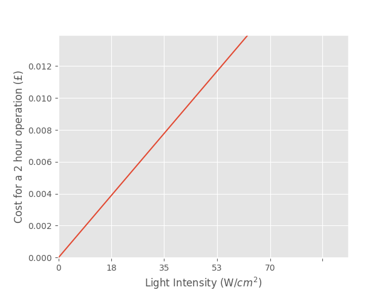
Figure 13: Effect light intensity has on the cost for the operation of the optogenetic tool
The simulaiton in Figure 13 was run for a period of 2 hours, where it was assumed a constant source of light would be present for the whole period of time. It is evident that the costs incurred increase directly
proportionally to the light intensity at which our optogenetic tool is operated at.
We also decided to analyse the impact light pulsing would have on the overall process costs.
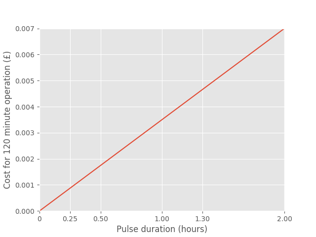
Figure 14: Effect of pulsing on the cost for the operation of the optogenetic tool
The simulation in Figure 14 was also run for a period of 2 hours, where it was assumed a constant light intensity of 40 W/cm2 was used. Similarly to Figure 13, we see that an increase in the pulse duration results in a proportional increase in the cost of operation.
We then decided to plot both the costs incurred for different light intensities and the pulsing durations on the same graph to evaluate their synergistic effect.
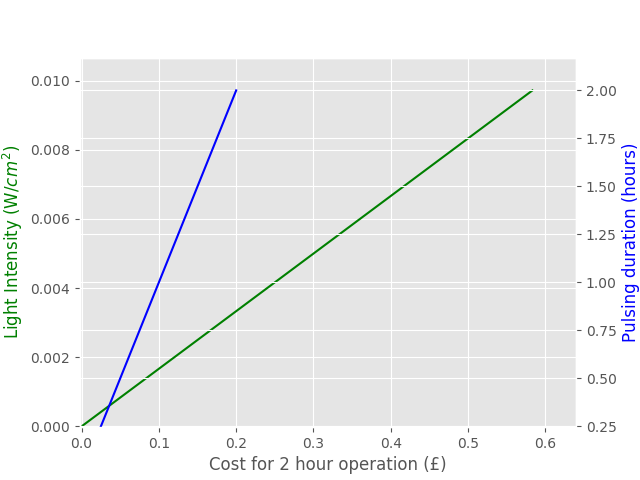
Figure 15: Comparison of the effects of pulsing and light intensity on the overall cost.
We decided to define the most optimum operating conditions for our optogenetic tool as those at which both lines intersect. Beyond the point of intersection it was evident that the operational costs
for the optogenetic tool were too high. Below the intersection point it was evident that the activity of the E.coli cell adhesion mechanism would
be too slow, and as one of the biggest selling points for our technolgy is its rapidity we decided it would not be feasible to
operate at such a slow rate. Therefore, the best trade-off was identified when operating at a light intensity of 30 W/cm2 with a 4.5 hr pulsing frequency.
Back to Top